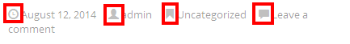

“Display Settings” tab provides lot of options to customize the output.
View type
This option contains all amazing layouts to display your content.
Below is output of these layouts:
Layout format
This option used to determine format of each item in output.
When you select “2 columns” as format, you will able to choose to display thumbnail in Left or Right side of other fields
And here is example output of these formats:


Fields settings
We call Title, Content, Thumbnail, Meta fields (Author name, Comment count…) are fields.
And this group allows you to control the display of these fields completely:
- select what fields to show by checking checkbox of field (Show Thumbnail, Show Content..)
- drag & drop to change the display order of them
Thumbnail settings
With this group, you will able to select size and style of thumbnail.
There is a “hidden” advanced feature about Thumbnail, when CVPro can’t find an explicit Thumbnail for a post, it will look for the first image inside content of post. If still there is no luck, CVPro will look for a Youtube, Vimeo, Dailymotion, Soundcloud link inside post’s content. This page demonstrates this advanced feature.
Content settings
With this group, you will able to select to show full content, or just excerpt.
If you show excerpt, it is able to custom excerpt length and text of “Read more” button
Meta fields settings
This group helps you to control display of Meta fields (Date, Author, Comment, Taxonomy).
You will able to select what field to be shown, and customize their display order (drag and drop to change).
In this group, there are 2 small options:
- Taxonomies display: By default, it will display all terms of taxonomies which a post associate with (such as categories, tags, post format…) Checking this option if you want to show only terms of the taxonomy you selected to filter posts. Here is an example: if in Taxonomy settings box, you only filter posts by Category, when you check this option, it will only display categories of post (without terms of other taxonomies: tags, format of post…)
- Icons: checking this option if you want to append icon before each meta field
Custom fields settings
Sometimes, you want to display custom fields in output and this group help you to do it easily.
You can select custom field from the select box, and you are able to show/hide name of custom field.
Pagination settings
If you are going to show more than twenty posts, maybe it is time for you to think about a pagination.
And it is easy to enable pagination, by clicking “Enable”. There are some options for you to customize the pagination:
Items per page
Set number of posts you want to display per page.
Pagination style
There are 2 current styles:
- Regular pagination
- Load more button
Alignment
Easy to align the pagination in left, center or right.
Other settings
Text direction
Controlling the text direction easily with 2 options: Left to Right, Right to Left
Open item in
This option used to determine how to open an item when click on its Title or Thumbnail.
If you select “New window” or “Lightbox”, you can set custom size (width and height) of new window or popup.